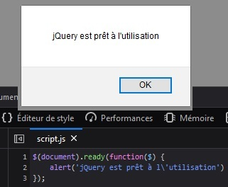
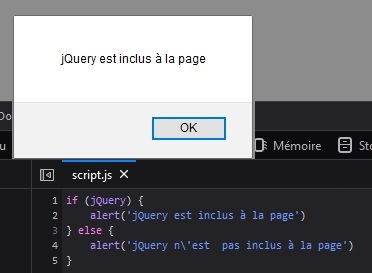

Objectif
- Utiliser jQuery dans un script
- Vérifier qu'il est possible de l'utiliser
Mise en situation
Une fois jQuery inclus à nos pages, il ne nous reste qu'une étape avant de pouvoir utiliser ses outils. Il s'agit de faire appel à la fonction jQuery().
Nous verrons que tout jQuery repose sur cette dernière. Il faut également vérifier qu'elle est bien fonctionnelle et prête à l’emploi.
Inclure la fonction principale de jQuery
Methode
Pour utiliser les objets, propriétés et méthodes proposés par jQuery, il est nécessaire d'inclure la fonction principale.
Le code devra obligatoirement être placé à l'intérieur de cette fonction.
Exemple
index.html
script.js
See the Pen Untitled by OpenSpirit (@OpenSpirit) on CodePen.
Cette fonction prend comme paramètre document : il s'agit simplement de la page HTML courante et plus précisément du DOM.
Par la suite elle écoute l'événement ready, ce qui signifie que le code qui suivra ne sera exécuté qu'une fois notre page entièrement chargée.
Enfin, le script est placé dans une fonction anonyme.
Simplifier les appels
Methode
Il existe une syntaxe relativement plus courte pour inclure jQuery : $().
Le sigle "dollar" est un alias de la fonction jQuery. Ainsi, nous pourrons écrire le code ci-dessous :
See the Pen Untitled by OpenSpirit (@OpenSpirit) on CodePen.
D'autres façons d'appeler jQuery
Complément
Il est également possible d'utiliser des structures un peu plus simplifiées pour faire appel à jQuery.
Sans le ready
Exemple
See the Pen Untitled by OpenSpirit (@OpenSpirit) on CodePen.
Éviter les collisions avec une autre librairie
Attention
See the Pen Untitled by OpenSpirit (@OpenSpirit) on CodePen.
L'alias $ peut être utilisé par d'autres librairies JS.
Afin d'éviter d'éventuels conflits entre deux librairies, nous pouvons ajouter $ en paramètre de la fonction anonyme passée à jQuery.
Vérifier la bonne installation de jQuery
Methode
Plaçons simplement un alert() ou un console.log() à l'intérieur de la fonction anonyme. Si une pop-up apparaît après le chargement de la page ou qu'un message s'affiche dans notre console, c'est gagné !
See the Pen Untitled by OpenSpirit (@OpenSpirit) on CodePen.
En cas d'erreur d'inclusion de jQuery, la pop-up ou le message console ne s'affichera pas et nous aurons généralement un message d'erreur nous indiquant la raison.


Test alternatif
Complément
Pour tester jQuery, nous pouvons également tester si l'objet global jQuery est inclus dans nos scripts.
See the Pen Untitled by OpenSpirit (@OpenSpirit) on CodePen.
À retenir
Syntaxe
- La manière la plus fréquente pour initialiser jQuery est la suivante : $(document).ready(function($){})
- Nous pouvons l'écrire plus simplement : $(function(){})
- Si nous intégrons d'autres librairies utilisant l'alias $ : $(function($){})
- Il est possible de tester si jQuery est prêt à l'utilisation grâce à un simple alert ou console.log à l'intérieur de la fonction anonyme passée à jQuery
See the Pen Untitled by OpenSpirit (@OpenSpirit) on CodePen.